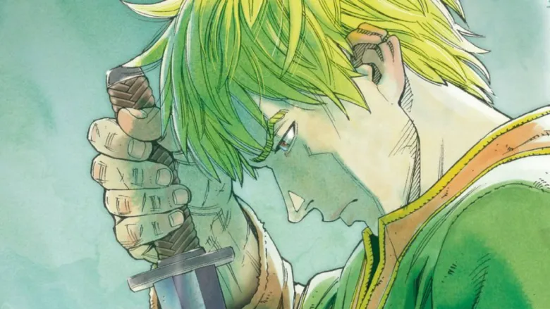

Eastern Expedition Arc(2014)

Plot
The Eastern Expedition Arc is the manga series' third arc, which begins with chapter 100 and continues until chapter 166 of the manga, following Thorfinn as he returns back for the first time in many years. Thorfinn returns home for the first time in years. The plot of this arc focuses on Thorfinn and Einar's dream of Vinland, which prompts them to go to Greece in order to secure funding for their big plan. The storyline includes a variety of new characters as Thorfinn picks up a number of new companions along the journey.but yet again gets caught entangled in a war between opposing factions of the Jomsvikings.Arc panels